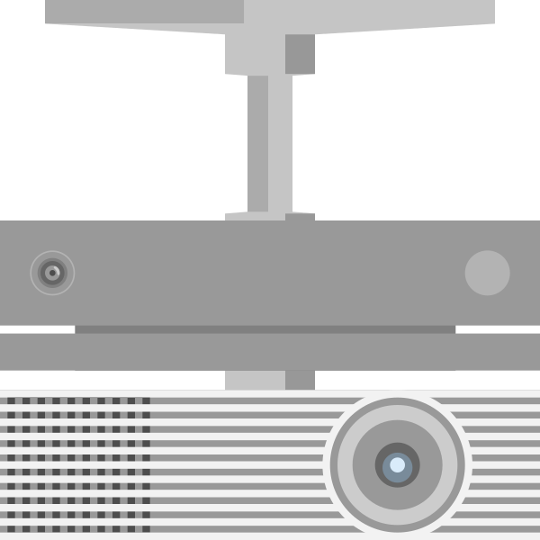
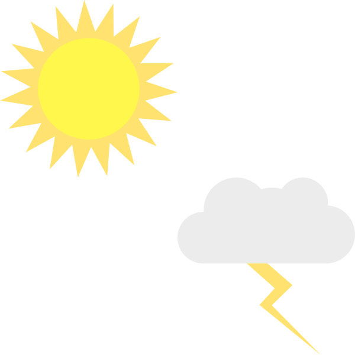
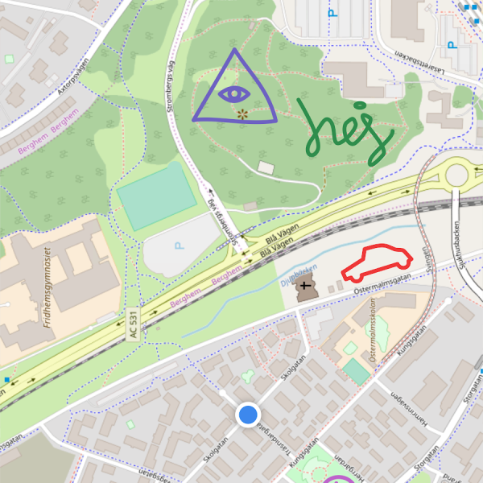
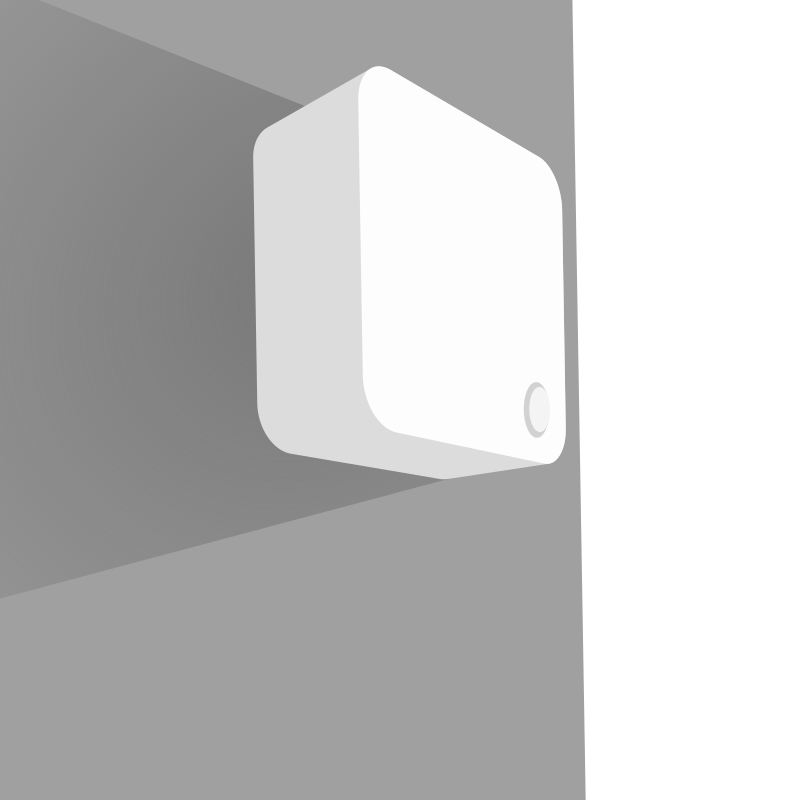

INTRODUCTION
My name is Nils Sundberg and I live in Umeå, Sweden. Currently, I
study at Umeå University where I attend a Master of Science programme
in interaction design.
Through my education I've been trained to design, build and test software.
Also, I'm trained in both front-end and back-end development.
INTERESTS
Ever since I was little I've been interested in painting and drawing and I still enjoy painting with oil on canvas. This interest made me choose a secondary school education with focus on visual arts, and also eventually played a part when I chose to study interaction design.
SKILLS
- C
- C++
- C#
- PYTHON
- JAVA
- JAVASCRIPT
- HTML
- CSS
TOOLS
- PHOTOSHOP
- ILLUSTRATOR
- AFTER EFFECTS
- GIMP 2
- INKSCAPE
- QT
- UNITY
- SKETCHUP
If you would like a more comprehensive resumé with my qualifications and skills, do not hesitate to send me an e-mail! nisu090@protonmail.com

AR ENVIRONMENT FOR DEMENTIA PATIENTS

SCHNELLE BRILLEN APP

COMMUNITY FOR WEATHER TALK

MAPDRAW

CLEANING APP USING LORA
Send me an e-mail at nisu090@protonmail.com if you have any questions about me or my work!